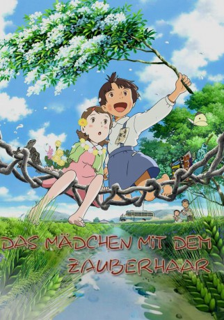

gesehen am 09.01.2017
gesehen am 09.01.2017Alternativ: Mai Mai Miracle (Englischer Titel) gesehen am 09.01.2017
 
 IMDB-Wertung: 7.0 / 10
IMDB-Wertung: 7.0 / 10  Metascore:
Metascore: 
Die neunjährige Shinko lebt mit ihrer Familie auf dem Land in einem idylischen Dorf in Japan. Den Bewohnern ist nach dem zweiten Weltkrieg nicht viel geblieben, doch das hindert Shinko nicht daran, eine glückliche Kindheit zu leben. Denn das aufgeweckte Mädchen hat eine blühende Fantasie. Immer wenn sich ihr Haar kräuselt, kann sie mit der Kraft ihrer Vorstellung in die Vergangenheit zurückreisen und das Dorf und die Menschen wie vor 1.000 Jahren sehen. Als sie sich in der Schule mit der anfangs sehr schüchternen Kiiko anfreundet, beginnt für beide ein aufregendes Abenteuer...
Jahr: 2009
Dauer: 91 Minuten
FSK: 0
Land: Japan Studio: Shochiku CompanyTonspuren: DD5.1 - ,
Untertitel:
Auflösung: SD (704x384) Größe: 1105 MB
Genre: Drama, Animation/Trick
Regisseur: Sunao Katabuchi
Drehbuch: Clark Cheng, Sunao Katabuchi, Nobuko Takagi
Soundtrack: Shûsei Murai, Minako 'Mooki' Obata
Darsteller:
Datei: X:\Kinder Anime\Div Anime\Mädchen mit dem Zauberhaar, Das (2009, FSK0, 704x384).avi seit 24.01.2016
Festplatte: Kinder-Filme+Trick
 Es gibt insgesamt 40 Filme in der Gruppe 'Kinder Anime\Div Anime'
Es gibt insgesamt 40 Filme in der Gruppe 'Kinder Anime\Div Anime'